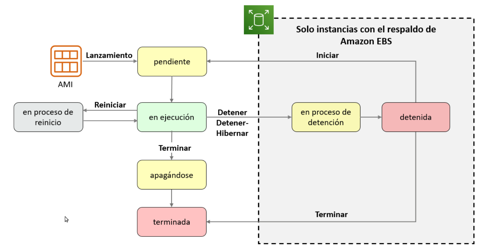

4. Informática AWS
4.1. Amazon EC2 (Elastic Compute Cloud)
Amazon Elastic Compute Cloud (Amazon EC2) es un servicio de cómputo en la nube escalable que permite a las empresas y desarrolladores lanzar y administrar máquinas virtuales (instancias) en la infraestructura de AWS. EC2 proporciona la capacidad de cómputo necesaria para ejecutar aplicaciones y cargas de trabajo de manera flexible y rentable.
4.2. Principales Características de EC2
- Escalabilidad Vertical y Horizontal: Puedes escalar tus instancias hacia arriba (aumentar la capacidad) o hacia abajo (disminuir la capacidad) según la demanda. Esto garantiza que siempre tengas suficiente capacidad de cómputo.
- Diversidad de Recursos: EC2 ofrece una amplia variedad de tipos de instancia optimizados para diferentes cargas de trabajo, desde instancias de propósito general hasta instancias optimizadas para GPU y cómputo intensivo.
- Flexibilidad de SO: Puedes seleccionar el sistema operativo que mejor se adapte a tus necesidades, incluidos Linux, Windows, macOS y sistemas basados en contenedores cómo Amazon ECS.
- Almacenamiento EBS: EC2 ofrece almacenamiento Elastic Block Store (EBS) para adjuntar volúmenes de datos persistentes a tus instancias. Puedes crear instantáneas (snapshots) de estos volúmenes para copias de seguridad y replicación.
- Amazon VPC: Puedes crear tu propia red virtual (Amazon VPC) para aislar tus instancias y controlar el acceso a ellas. También puedes configurar grupos de seguridad y asignar direcciones IP elásticas.
- Auto Scaling y Load Balancing: EC2 es compatible con Auto Scaling para ajustar automáticamente el número de instancias en función de la demanda. También puedes usar Amazon Elastic Load Balancing (ELB) para distribuir el tráfico entre múltiples instancias.
4.3. Creación de Instancias EC2
El proceso de creación de instancias EC2 generalmente implica los siguientes pasos:
- Inicia sesión en la Consola de AWS con tus credenciales de cuenta.
- Desde el panel de AWS, navega a la sección "Servicios" y selecciona "EC2" bajo la categoría "Compute".
- Haz clic en "Launch Instance" para comenzar el proceso de lanzamiento de una instancia.
- Selecciona la opciones de la instancia
- Después de lanzar la instancia, puedes conectarte a ella utilizando SSH (para sistemas basados en Unix) o RDP (para sistemas Windows).
Elecciones que se toman con el asistente de lanzamiento de instancias:
- AMI Imagen de Amazon Machine (AMI)
- Es una plantilla que se utiliza para crear una instancia EC2 (una máquina virtual, o VM, que se ejecuta en la nube de AWS).
- Contiene un sistema operativo Windows o Linux.
- También suele tener algún sistema de software preinstalado.
- Tipo de instancia
- El tipo de instancia que elija determina los siguientes elementos: La memoria (RAM), la capacidad de procesamiento (CPU), el espacio en disco y tipo de disco (almacenamiento), el rendimiento de red
- Configuración de red
- ¿Dónde debe implementarse la instancia?
- Identificar la VPC y, de forma opcional, la subred
- ¿Debería asignarse una dirección IP pública automáticamente?
- Para que sea accesible desde Internet
- Rol de IAM
- ¿Tendrá que interactuar el software de la instancia EC2 con otros servicios de AWS? Si es así, asocie el rol de IAM adecuado.
- Datos de usuario
- De forma opcional, puede especificar un script de datos de usuario durante el llanzamiento de la instancia.
- Utilice scripts de datos de usuario para personalizar el entorno de tiempo de ejecución de la instancia.
- El script se ejecuta la primera vez que se inicia la instancia.
- Opciones de almacenamiento
- Configure el volumen raíz.
- Lugar donde está instalado el sistema operativo invitado
- Adjunte volúmenes de almacenamiento adicionales (opcional).
- Es posible que la AMI incluya más de un volumen.
- Para cada volumen, especifique lo siguiente:
- El tamaño del disco (en GB)
- El tipo de volumen. Hay diferentes tipos de unidades de estado sólido (SSD) y unidades de disco duro (HDD) disponibles.
- Si el volumen se eliminará cuando se termine la instancia
- Si se debe utilizar el cifrado
- Opciones de almacenamiento
- Amazon Elastic Block Store (Amazon EBS): Ofrece volúmenes de almacenamiento de nivel de bloque persistentes. Puede detener la instancia e iniciarla de nuevo sin perder los datos.
- Almacén de instancias de Amazon EC2: El almacenamiento se proporciona en discos asociados al equipo host en el que se ejecuta la instancia EC2. Si la instancia se detiene, se eliminarán los datos almacenados aquí.
- Otras opciones de almacenamiento (no para el volumen raíz):
- Montar un sistema de archivos de Amazon Elastic File System (Amazon EFS)
- Conectarse a Amazon Simple Storage Service (Amazon S3)
- Etiquetas
- Una etiqueta es una marca que se puede asignar a un recurso de AWS.
- Cada etiqueta consta de una clave y un valor opcional.
- El etiquetado es la forma en que asocia metadatos a una instancia EC2.
- Los beneficios potenciales del etiquetado son la capacidad de filtrado, la automatización, la asignación de costos y el control de acceso.
- Grupo de seguridad
- Un grupo de seguridad es un conjunto de reglas de firewall que controlan el tráfico a la instancia.
- Se encuentra fuera del sistema operativo invitado de la instancia.
- Cree reglas que especifiquen el origen y los puertos que las comunicaciones de red pueden utilizar.
- Especifique el número de puerto y el protocolo, como el Protocolo de control de transmisión (TCP), el Protocolo de datagramas de usuario (UDP) o el Protocolo de mensaje de control de Internet (ICMP).
- Especifique el origen (por ejemplo, una dirección IP u otro grupo de seguridad) que tiene permiso para utilizar la regla.
- Par de claves
- En el lanzamiento de la instancia, debe especificar un par de claves existente o crear uno nuevo.
- Un par de claves consta de lo siguiente:
- Una clave pública que AWS almacena.
- Un archivo de clave privada que usted almacena.
- Posibilita las conexiones seguras a la instancia.
- Para las AMI de Windows:
- Utilice la clave privada para obtener la contraseña de administrador que necesita para iniciar sesión en la instancia.
- Para las AMI de Linux:
- Utilice la clave privada para utilizar SSH y conectarse de forma segura a la instancia.
Ciclo de vida de las instancias

Que ocurre cuando detienes una instancia
- El reinicio de una instancia no cambiará las direcciones IP ni los nombres de host DNS.
- Cuando se detiene una instancia y se vuelve a iniciar, sucede lo siguiente:
- Se modifican la dirección IPv4 pública y el nombre de host DNS externo.
- La dirección IPv4 privada y el nombre de host DNS interno permanecen iguales.
- Si necesitas una dirección IP pública persistente, asocia una dirección IP elástica a la instancia.
- Características de la dirección IP elástica:
- Se puede asociar a las instancias en la región según sea necesario.
- Permanece asignada a su cuenta hasta que decida liberarla.
4.4. Casos de Uso de EC2
Amazon EC2 es versátil y se utiliza en una amplia variedad de casos de uso, que incluyen:
- Hospedaje de Sitios Web: Ejecutar servidores web y alojar sitios y aplicaciones web.
- Desarrollo y Pruebas: Crear entornos de desarrollo y pruebas bajo demanda.
- Procesamiento de Datos: Ejecutar tareas de procesamiento de datos y análisis con clusters de EC2.
- Aplicaciones Empresariales: Ejecutar aplicaciones empresariales críticas en instancias EC2.
- Ejecución de Contenedores: Implementar y administrar contenedores con servicios como Amazon ECS y EKS.
4.5. Introducción a AWS CLI
AWS CLI es una interfaz de línea de comandos que te permite interactuar con los servicios y recursos de Amazon Web Services (AWS) directamente desde tu terminal. Con AWS CLI, puedes administrar y configurar recursos de AWS, automatizar tareas y realizar operaciones de forma eficiente sin necesidad de utilizar la interfaz web de AWS.
4.5.1. Instalación en Windows
Puedes instalar AWS CLI en Windows siguiendo estos pasos:
- Descarga el instalador de AWS CLI para Windows desde el sitio web oficial de AWS.
- Ejecuta el instalador descargado y sigue las instrucciones de instalación.
4.5.2. Instalación en Linux y macOS
En sistemas Linux y macOS, puedes instalar AWS CLI utilizando el administrador de paquetes pip de Python o a través de la instalación de paquetes de tu sistema.
Instalación con pip
Ejecuta el siguiente comando en tu terminal:
pip install awscli
Instalación en macOS con Homebrew
Si utilizas Homebrew en macOS, puedes instalar AWS CLI con el siguiente comando:
brew install awscli
4.5.2. Configuración de AWS CLI
Después de instalar AWS CLI, debes configurar las credenciales de acceso para que puedas autenticarte en AWS. Puedes hacerlo utilizando el comando:
aws configure
Este comando preguntará estos datos:
AWS Access Key ID [None]:
AWS Secret Access Key [None]:
Default region name [None]:
Default output format [None]:
- En Linux/macOs el archivo estará en la ruta: ~/.aws/credentials.
- En Windows estará en la ruta: C:\Users\usuario.aws\credentials.
Si queremos utilizar las credenciales de AWS Academy solo tenemos que copiar en el archivo ~/.aws/credentials los datos que nos aparecen en el apartado AWS Details -> Cloud Access -> AWS CLI.
Ejemplo de un archivo credentials
[default]
aws_access_key_id=BSICYBW38QHVAVV7P365
aws_secret_access_key=DE/CB2FGCx8EV34x0EtuZfJg39E7hapZ9suhXBzF
aws_session_token=FwoGZXIvYXdzECkaDAGFN5okYCHateFXISK9AYwT4gghzz5hIr6TZs9X8pQaOYPZvTCNSrLtJoaw/fEwz9...XBzH
aws configure
4.5.3. Uso Básico de AWS CLI
AWS CLI permite ejecutar comandos para interactuar con servicios de AWS. Aquí tienes algunos ejemplos de comandos básicos:
Listar Instancias EC2
aws ec2 describe-instances
Crear un Bucket de Amazon S3
aws s3 mb s3://mi-bucket
Subir un Archivo a Amazon S3
aws s3 cp mi-archivo.txt s3://mi-bucket/
Crear una Instancia EC2
aws ec2 run-instances --image-id ami-XXXXXXXXXXXXXXXXX --instance-type t2.micro --key-name mi-keypair
Ayuda
4.5.4. Scripts y Automatización
AWS CLI es una herramienta poderosa para la automatización de tareas en AWS. Puedes escribir scripts y secuencias de comandos para realizar operaciones complejas y administrar recursos de manera eficiente.
AWS CLI proporciona documentación detallada y ayuda en línea para cada comando y servicio. Puedes utilizar el comando aws help para obtener información sobre el uso de comandos específicos y acceder a la documentación oficial de AWS CLI en línea.
4.6. Amazon VPC
Amazon Virtual Private Cloud (Amazon VPC) es un servicio de red que te permite crear una red virtual aislada en la nube de AWS. Con Amazon VPC, puedes controlar la topología de red, asignar direcciones IP, definir tablas de rutas y aplicar reglas de seguridad para tus recursos en la nube. VPC te permite crear una extensión virtual de tu centro de datos en AWS.
4.6.1. Conceptos Clave de Amazon VPC
Red Virtual (VPC)
Una VPC es tu propia red virtual en la nube de AWS. Puedes personalizar su topología, direcciones IP y configuración de red.
Subredes
Una VPC se divide en subredes. Puedes crear subredes públicas y privadas según tus necesidades.
Tablas de Rutas
Las tablas de rutas definen cómo se enrutan los paquetes dentro y fuera de la VPC. Puedes personalizar las rutas y las reglas.
Grupos de Seguridad
Los grupos de seguridad son cortafuegos virtuales que controlan el tráfico de entrada y salida de las instancias EC2.
Listas de Control de Acceso a la Red (NACL)
Las NACL son conjuntos de reglas que controlan el tráfico de subredes en la VPC.
VPN y Direct Connect
Amazon VPC te permite conectar tu red local a la VPC mediante una conexión VPN o Direct Connect para acceso privado.
4.6.2. Configuración de Amazon VPC
Pasos:
-
Creación de una VPC
- Define una VPC especificando su rango de direcciones IP y configuración de red.
- Puedes seleccionar un rango de direcciones IP IPv4 CIDR para tu VPC.
-
Creación de Subredes
- Divide tu VPC en subredes públicas y privadas.
- Configura las tablas de rutas para permitir o denegar el tráfico.
-
Configuración de Grupos de Seguridad
- Define grupos de seguridad para controlar el tráfico de red a instancias EC2.
- Asigna reglas de entrada y salida a los grupos de seguridad.
-
Configuración de NACL
-
Configura listas de control de acceso a la red (NACL) para controlar el tráfico de subredes.
- Define reglas de entrada y salida en las NACL.
4.6.3. Escenarios Comunes en Amazon VPC
- Crea una VPC con subredes públicas que tienen acceso a Internet y subredes privadas que están aisladas.
- Configura una VPN o Direct Connect para conectar tu red local a tu VPC en AWS.
- Implementa aplicaciones y servicios en tus subredes personalizadas dentro de la VPC.
4.6.4. Recomendaciones de Seguridad
- Seguridad de Grupos: Asigna grupos de seguridad para controlar el tráfico de red a nivel de instancia.
- Aislamiento de Subredes: Diseña subredes para aislar componentes críticos.
- Monitoreo y Auditoría: Habilita el monitoreo y la auditoría de red para supervisar y proteger tu VPC.
4.7. Actividades
4.7.1. Actividad 1
Crea una instancia EC2 Amazon Linux 2 AMI para utilizarla como servidor Web, con las siguientes características:
- Red: Lab- VPC
- Almacenamiento: EBS 8 Gb
- Etiquetas: Nombre - Servidor Web
- Grupo de seguridad: Crea uno con acceso mediante SSH y acceso a través de HTTP (es un servidor Web)
- Tiene que tener habilitada la protección de terminación.
- Claves: Crea un par de claves para su acceso mediante SSH.
- El servidor web debe iniciar con un index.php como este:
<html><h1>!!! Hola, este es mi servidor Web !!!</h1></html> - Una vez creada y lanzada la instancia. Accede al servidor en otra pestaña del navegado
Ayuda. Datos de usuario
#!/bin/bash
dnf install -y httpd
systemctl enable httpd
systemctl start httpd
echo '<html><h1>Hello From Your Web Server!</h1></html>' > /var/www/html/index.html
4.7.2. Actividad 2
Crea una VPC con una única subred pública con una instancia EC2 con un servidor Web.
- El rango de direcciones de la subred pública es 10.0.1.0/24.
- Prueba el entorno con y sin IP elástica.